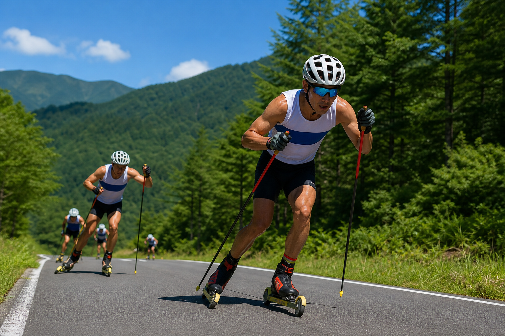
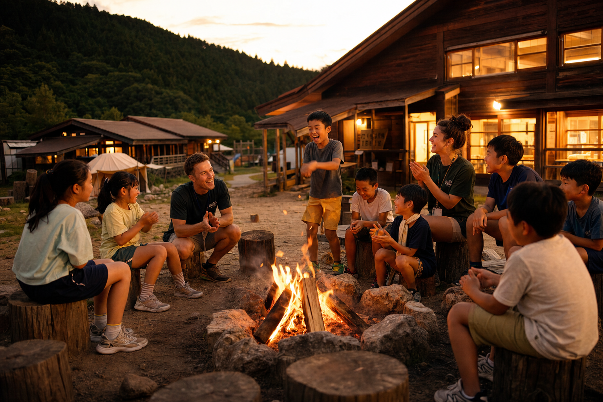

気候順応の競技拠点
旧ゲレンデ地形を活かしたクロスカントリー専用コース。積雪不足時は特設2.5km／2kmへ柔軟に変更。夏季はローラースキーコースでSEIKO SPORTSLINK計測の本格大会を開催——機械集約型から地形資本型へ。
コース利用・大会情報新潟県中魚沼郡 · 津南町
雪から、アンバンドリングする。
一般滑走休止 · 特化型施設 敷地 40ha競技拠点 CC・ローラー · 教育拠点 English Adventure
パノラマ合同会社 · 更新 6/13
Two Pillars

旧ゲレンデ地形を活かしたクロスカントリー専用コース。積雪不足時は特設2.5km／2kmへ柔軟に変更。夏季はローラースキーコースでSEIKO SPORTSLINK計測の本格大会を開催——機械集約型から地形資本型へ。
コース利用・大会情報丘・湖・杉林・ローエレメント——スキー場跡地が日本有数規模のアウトドア教育キャンパスに。スクリーンタイムを排した5日間の没入体験が、都市部ファミリーに高単価の独占価値を提供します。
キャンププログラムEnglish Adventure
パノラマ合同会社が運営する英語アウトドアキャンプ。小1〜中3向けの4泊5日から8泊9日、冬休みまで通年展開。旧ロッジを拠点に看護師常駐・多目的ビル・クラフトハウス——2025年夏からグランピングサイトも導入。

Nordic · Roller
第28回つなんクロスカントリースキー大会（SAJ23-CC-49/97）など最高峰の公認レースを定期開催。NPO法人Tapが大会実務を担い、カガンポート下大駐車場への誘導など地域連携の動線管理も徹底。試走は大人800円・小中学生500円（要シーズン券以外）。
Camp Journey
都市部の教育熱心層向け——公式貸切バスと自家用車送迎割引で、津南周辺への家族旅行も誘発するジャーニー設計。
SPACE ARBITRAGE · EDUCATION01
新宿・名古屋・大阪
公式貸切バス（関越道経由 約3時間）
02
40haキャンパス
湖・丘・ローエレメントで英語体験
03
ロッジ生活
食堂・シャワー・看護室完備
04
クラフト＆キャンプファイヤー
英語で歌う・作る・話す夜
05
家族で津南周遊
自家用車送迎で¥6,000割引
Access
関越道塩沢石打ICから車で約50分 · JR越後田中駅から車で約10分 · 駐車場300台
TEL 025-765-2040（パノラマ合同会社）